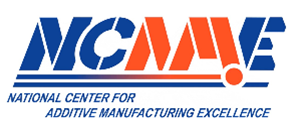
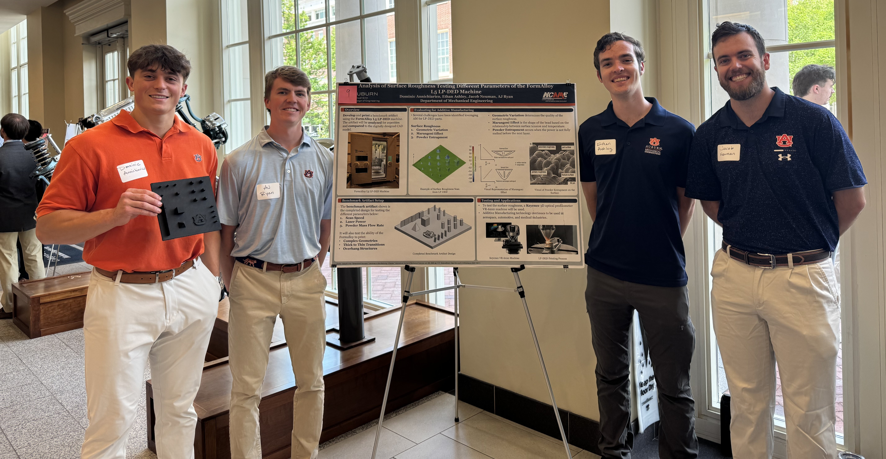
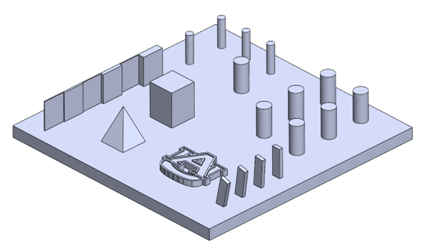
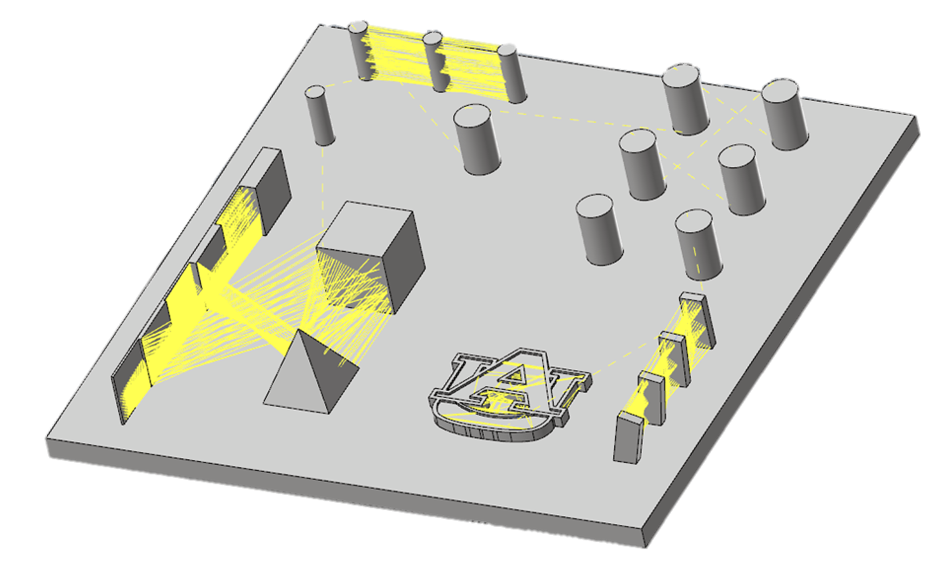
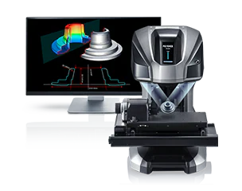

DWG C-01← All projects
Additive Manufacturing and Design
Spent one year, or two semesters, on this project. The primary objective was to determine relative geometric, structural, and surface qualities of LP-DED printing using the Formalloy L5 printer.
Sponsors:

National Center for Additive Manufacturing Excellence (NCAME)
United States Army Aviation and Missle Center (AvMC)
Goals:
-
Literature and Market Search
- Became familiar with all major AM technologies, especially L-PBF and LP-DED
- Studied operational and physical principles.
- Compared geometric, structural, and surface behavior.
-
Process Technology Comparisons
- Learned advantages, disadvantages, and market trends.
- Analyzed materials and powder characterization methods.
- Explored leading manufacturers and industry applications.
-
CAD Development
- Created benchmark artifact layout for LP-DED.
- Used SolidWorks to design structure plate.
- Tailored design to assess machine capability.
-
LP-DED Printing
- Printed CAD model twice on Formalloy L5.
- Auburn's NCAME is the first facility in the world with this specific printer.
- Refined settings for optimal deposition.
-
Print Evaluation
- Trained on Keyence 3D scanner.
- Printed CAD model on Formalloy L5.
- Collected and analyzed roughness metrics.

Tools & Skills Used:

SolidWorks
MasterCAM
Keyence Profilometer
Research
Presentation
 FormAlloy L5 LP-DED Printer
FormAlloy L5 LP-DED Printer
ITAR Notice:
This project was ITAR Regulated so I addionally am ITAR certified and completed Cybersecurity Awareness Training.